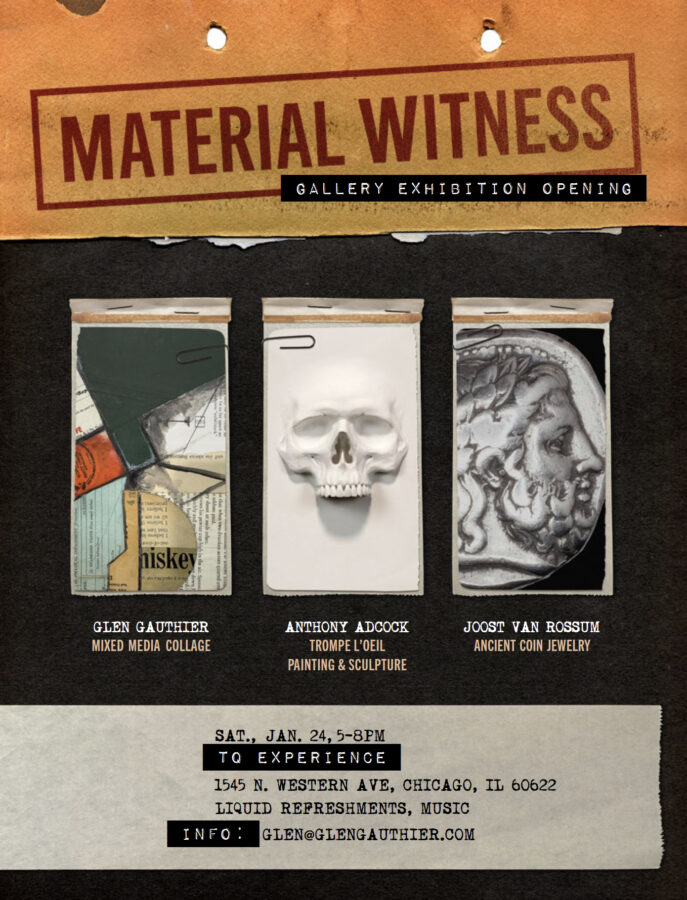

Material Witness
Material Witness
A one-night art exhibition featuring three practitioners of intriguing art working in three distinct mediums.
Saturday, January 24, 2026
This exhibition explores the interesting ways humble materials are used to redefi ne their value and create new meaning.
TQ Experience is pleased to present Material Witness, a profound exhibition featuring three accomplished artists whose practices transform familiar materials into transformative works.
Through meticulous collage, hyper-realistic painting and sculpture, and ancient coin jewelry, the exhibition examines how value is constructed, carried, and redefi ned over time. Removed from their original utilitarian function, fragmented paper sources are curated, cut and reassembled; images and objects rendered with precision insist on prolonged presence and viewing; coins become intimate objects – all to redefi ne the mechanics of meaning itself.
Material Witness offers a varied yet cohesive body of work grounded in concept, craft, and longevity—objects that hold both visual impact and enduring intellectual value.
Material Witness artists: